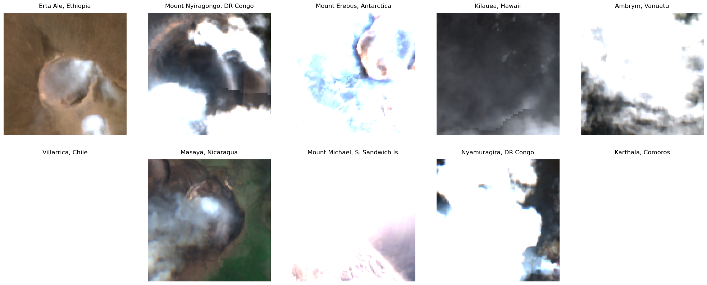
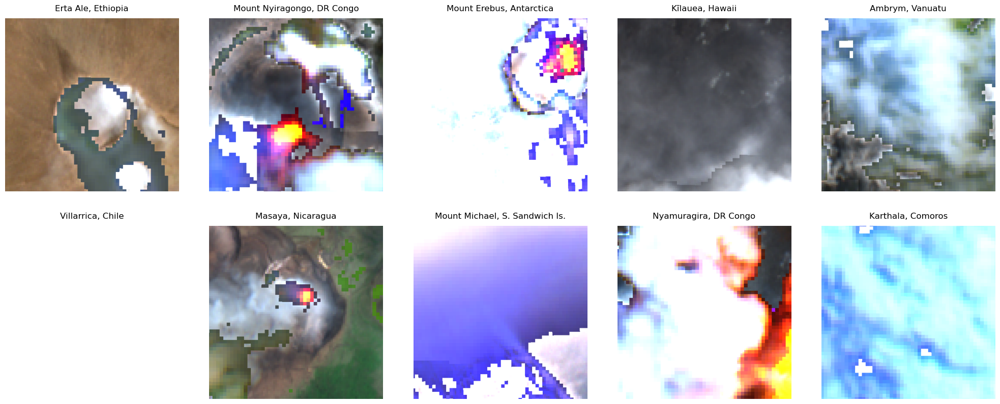
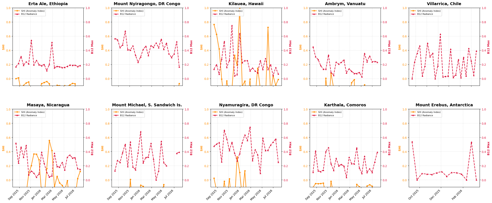

** 🤖 AI-Generated Notebook** This notebook was developed collaboratively with an AI assistant through a series of iterative prompts. We kept the notebook code and comments as close as possible to the output of the AI to show you what is possible - black formatting was applied automatically as requested by the notebook-samples repository. In a real world case, the notebook would require careful review and checking, adding more .md cells and better commenting to make it easier to work with. The core steps of this workflow were generated based on the following key user requests:
Architecture Validation: Inquired about using the CDSE Sentinel Hub Statistics API and SWIR bands to automate lava lake monitoring without downloading massive data volumes.
Visual Evalscript: Requested a custom Evalscript to dynamically render hot pixels as a SWIR composite and cold pixels in true color.
Statistical Evalscript: Refined the Evalscript to output both visual bands and raw statistical indices (Normalized Hotspot Index and B12 radiance) simultaneously.
Area of Interest Generation: Asked for the generation of bounding box coordinates for 10 of the most active lava lakes on Earth.
API Integration: Requested Jupyter Python code to authenticate with CDSE endpoints and fetch recent optical/thermal imagery while handling cloud cover thresholds.
Time-Series Data Extraction: Requested a Statistical API query to extract the maximum heat indices over 14-day intervals for the past year into Pandas DataFrames.
Data Visualization: Asked for dual-axis line charts to plot the one-year historical thermal activity of each volcano.
Interactive Dashboard & Live Query: Requested an interactive time-slider using ipywidgets to classify historical activity, and a final dynamic query to print a list of currently active lava lakes.
This notebook demonstrates an automated workflow for monitoring thermal anomalies at 10 of the most active lava lakes on Earth using the Copernicus Data Space Ecosystem (CDSE).
We will use the Sentinel Hub Python API to: 1. Authenticate with our CDSE OAuth client credentials. 2. Query the latest Sentinel-2 L2A (atmospherically corrected) optical imagery for our target bounding boxes. 3. Apply a relaxed 80% maximum cloud cover threshold to ensure we capture active vents even in stormy regions. 4. Query the Statistical API to generate dataframes of maximum SWIR radiance and Normalized Hotspot Indices (SHI). 5. Visualize the historical timelines and current active status of these volcanoes.
# %% [code]import getpassfrom sentinelhub import SHConfigprint("Please enter your CDSE OAuth Client credentials.")client_id = getpass.getpass("Client ID: ")client_secret = getpass.getpass("Client Secret: ")# Configure Sentinel Hub specifically for the CDSE endpointconfig = SHConfig()config.sh_client_id = client_idconfig.sh_client_secret = client_secretconfig.sh_base_url ="https://sh.dataspace.copernicus.eu"config.sh_token_url ="https://identity.dataspace.copernicus.eu/auth/realms/CDSE/protocol/openid-connect/token"print("Authentication configuration complete.")
Fetching latest clear imagery from CDSE... This may take a moment.

# %% [code]# 1. Advanced Thermal Anomaly Evalscriptevalscript_thermal ="""//VERSION=3function setup() { return { input: ["B02","B03","B04","B08","B8A","B11","B12","SCL","dataMask"], output: [ { id: "default", bands: 3, sampleType: "UINT8" }, { id: "index", bands: 1, sampleType: "FLOAT32" }, { id: "eobrowserStats", bands: 2, sampleType: "FLOAT32" }, { id: "heatindices", bands: 2, sampleType: "FLOAT32" }, { id: "dataMask", bands: 1, sampleType: "UINT8" } ] };}// Thresholdsconst SWIR_HOT_THRESHOLD = 0.20;const SHI_THRESHOLD = 0.10;// Stretch rangesconst TRUE_MIN = 0.0, TRUE_MAX = 0.30;const SWIR_MIN = 0.05, SWIR_MAX = 0.60;// Helpersfunction stretch(v, a, b) { let x = (v - a) / (b - a); x = Math.max(0, Math.min(1, x)); return Math.round(255 * x);}function getNIR(s) { return (s.B8A !== undefined && !isNaN(s.B8A)) ? s.B8A : (s.B08 !== undefined && !isNaN(s.B08)) ? s.B08 : 0.0;}// Strict cloud maskfunction isClear(s) { if (s.SCL === undefined) return true; let c = s.SCL; if (c === 3) return false; // cloud shadow if (c >= 8 && c <= 10) return false; // clouds return true;}// Purple heatmap for SHIfunction purpleRamp(x) { x = Math.max(0, Math.min(1, x)); return [ Math.round(255 * x), Math.round(255 * 0.15 * x), 255 ];}function evaluatePixel(s) { // Return NaNs for empty border pixels so stats aren't skewed if (!s.dataMask) { return { default: [0,0,0], index: [NaN], eobrowserStats: [NaN, NaN], heatindices: [NaN, NaN], dataMask: [0] }; } let clear = isClear(s); let cloudFlag = clear ? 0 : 1; // True color let tc = [ stretch(s.B04, TRUE_MIN, TRUE_MAX), stretch(s.B03, TRUE_MIN, TRUE_MAX), stretch(s.B02, TRUE_MIN, TRUE_MAX) ]; // SWIR composite let swirRGB = [ stretch(s.B12, SWIR_MIN, SWIR_MAX), stretch(s.B11, SWIR_MIN, SWIR_MAX), stretch(s.B04, SWIR_MIN, SWIR_MAX) ]; // SHI calculation let nir = getNIR(s); let shi = (s.B12 + nir > 0) ? (s.B12 - nir) / (s.B12 + nir) : 0; // Classification let swirHot = s.B12 > SWIR_HOT_THRESHOLD; let shiHot = clear && (shi > SHI_THRESHOLD); // Prepare the custom Jupyter output [Band 0: SHI, Band 1: Raw B12] let heatindicesOutput = [shi, s.B12]; // Output logic if (swirHot) { return { default: swirRGB, index: [shi], eobrowserStats: [shi, cloudFlag], heatindices: heatindicesOutput, dataMask: [s.dataMask] }; } if (shiHot) { return { default: purpleRamp(shi), index: [shi], eobrowserStats: [shi, cloudFlag], heatindices: heatindicesOutput, dataMask: [s.dataMask] }; } return { default: tc, index: [shi], eobrowserStats: [shi, cloudFlag], heatindices: heatindicesOutput, dataMask: [s.dataMask] };}"""fig, axes = plt.subplots(2, 5, figsize=(20, 8))axes = axes.flatten()print("Fetching latest thermal imagery from CDSE... This may take a moment.")for i, volcano inenumerate(volcanoes): name = volcano["name"] lons = [c[0] for c in volcano["coords"]] lats = [c[1] for c in volcano["coords"]] bbox = BBox(bbox=[min(lons), min(lats), max(lons), max(lats)], crs=CRS.WGS84) request = SentinelHubRequest( evalscript=evalscript_thermal, input_data=[ SentinelHubRequest.input_data( data_collection=cdse_s2_l2a, time_interval=(start_date, end_date), maxcc=0.80, ) ], responses=[SentinelHubRequest.output_response("default", MimeType.PNG)], bbox=bbox, size=(512, 512), config=config, )try: response = request.get_data()if response andlen(response) >0: axes[i].imshow(response[0]) axes[i].set_title(name, fontsize=12, pad=10)else: axes[i].set_title(f"{name}\n(No valid data)", fontsize=12, pad=10) axes[i].text(0.5, 0.5, "No Image Available", ha="center", va="center")exceptExceptionas e: axes[i].set_title(f"{name}\n(Error)", fontsize=12, pad=10)print(f"Error fetching {name}: {e}") axes[i].axis("off")plt.tight_layout()plt.subplots_adjust(wspace=0.1, hspace=0.2)plt.show()
Fetching latest thermal imagery from CDSE... This may take a moment.

# %% [code]import pandas as pdfrom sentinelhub import SentinelHubStatisticalfrom IPython.display import display# 1. Specialized Evalscript for the Statistical APIevalscript_stats ="""//VERSION=3function setup() { return { input: ["B08", "B8A", "B11", "B12", "SCL", "dataMask"], output: [ { id: "heatindices", bands: 2, sampleType: "FLOAT32" }, { id: "dataMask", bands: 1, sampleType: "UINT8" } // Mandatory for stats calculation ] };}function getNIR(s) { return (s.B8A !== undefined && !isNaN(s.B8A)) ? s.B8A : (s.B08 !== undefined && !isNaN(s.B08)) ? s.B08 : 0.0;}function evaluatePixel(s) { // If no data, mask it out so it doesn't ruin the statistics if (!s.dataMask) { return { heatindices: [NaN, NaN], dataMask: [0] }; } let nir = getNIR(s); let shi = (s.B12 + nir > 0) ? (s.B12 - nir) / (s.B12 + nir) : 0; return { heatindices: [shi, s.B12], dataMask: [1] };}"""shi_records = {}b12_records = {}print("Querying Statistical API for 14-day intervals over the last year...")print("This evaluates every single pixel, so it may take a minute or two.\n")for volcano in volcanoes: name = volcano["name"] lons = [c[0] for c in volcano["coords"]] lats = [c[1] for c in volcano["coords"]] bbox = BBox(bbox=[min(lons), min(lats), max(lons), max(lats)], crs=CRS.WGS84) aggregation = SentinelHubStatistical.aggregation( evalscript=evalscript_stats, time_interval=(start_date, end_date), aggregation_interval="P14D", resolution=(20, 20), ) request = SentinelHubStatistical( aggregation=aggregation, input_data=[ SentinelHubStatistical.input_data(cdse_s2_l2a) ], # Note: We dropped maxcc here bbox=bbox, config=config, )try: response = request.get_data()[0] shi_row = {} b12_row = {}for interval_data in response["data"]: date_str = interval_data["interval"]["from"][:10] outputs = ( interval_data.get("outputs", {}).get("heatindices", {}).get("bands", {}) ) shi_max = outputs.get("B0", {}).get("stats", {}).get("max", float("nan")) b12_max = outputs.get("B1", {}).get("stats", {}).get("max", float("nan")) shi_row[date_str] = shi_max b12_row[date_str] = b12_max shi_records[name] = shi_row b12_records[name] = b12_rowprint(f"✅ Successfully processed stats for {name}")exceptExceptionas e:print(f"❌ Error querying {name}: {e}")df_shi = pd.DataFrame.from_dict(shi_records, orient="index")df_b12 = pd.DataFrame.from_dict(b12_records, orient="index")df_shi = df_shi.reindex(sorted(df_shi.columns), axis=1)df_b12 = df_b12.reindex(sorted(df_b12.columns), axis=1)print("\n"+"="*80)print("🌋 MAXIMUM SHI (Normalized Hotspot Index) PER 14-DAY INTERVAL")print("="*80)display(df_shi.round(3))print("\n"+"="*80)print("🔥 MAXIMUM SWIR B12 RADIANCE PER 14-DAY INTERVAL")print("="*80)display(df_b12.round(3))# %% [code]import matplotlib.dates as mdatesimport numpy as npfig, axes = plt.subplots(2, 5, figsize=(24, 10))axes = axes.flatten()dates_pd = pd.to_datetime(df_shi.columns)print("Generating 1-Year Activity Timelines...")for i, volcano_name inenumerate(df_shi.index): ax1 = axes[i] shi_data = df_shi.loc[volcano_name].fillna(np.nan).values b12_data = df_b12.loc[volcano_name].fillna(np.nan).values# SHI (Orange) on Primary Left Axis color1 ="darkorange" line1 = ax1.plot( dates_pd, shi_data, color=color1, marker="o", markersize=4, linestyle="-", linewidth=2, label="SHI (Anomaly Index)", ) ax1.set_ylabel("SHI", color=color1, fontsize=10, fontweight="bold") ax1.tick_params(axis="y", labelcolor=color1) ax1.set_ylim(-0.1, 1.0)# B12 Radiance (Red) on Secondary Right Axis ax2 = ax1.twinx() color2 ="crimson" line2 = ax2.plot( dates_pd, b12_data, color=color2, marker="^", markersize=4, linestyle="--", linewidth=2, label="B12 Radiance", ) ax2.set_ylabel("B12 Max", color=color2, fontsize=10, fontweight="bold") ax2.tick_params(axis="y", labelcolor=color2) max_b12 = np.nanmax(b12_data) ifnot np.isnan(b12_data).all() else1.0 ax2.set_ylim(-0.1, max(1.0, max_b12 *1.1)) ax1.set_title(volcano_name, fontsize=14, pad=10, fontweight="bold") ax1.grid(True, linestyle=":", alpha=0.7) ax1.xaxis.set_major_locator(mdates.MonthLocator(interval=2)) ax1.xaxis.set_major_formatter(mdates.DateFormatter("%b %Y")) lines = line1 + line2 labels = [l.get_label() for l in lines] ax1.legend(lines, labels, loc="upper left", fontsize=8, framealpha=0.9)fig.autofmt_xdate(rotation=45)plt.tight_layout()plt.subplots_adjust(wspace=0.4, hspace=0.3)plt.show()
Querying Statistical API for 14-day intervals over the last year...
This evaluates every single pixel, so it may take a minute or two.
✅ Successfully processed stats for Erta Ale, Ethiopia
✅ Successfully processed stats for Mount Nyiragongo, DR Congo
✅ Successfully processed stats for Mount Erebus, Antarctica
✅ Successfully processed stats for Kīlauea, Hawaii
✅ Successfully processed stats for Ambrym, Vanuatu
✅ Successfully processed stats for Villarrica, Chile
✅ Successfully processed stats for Masaya, Nicaragua
✅ Successfully processed stats for Mount Michael, S. Sandwich Is.
✅ Successfully processed stats for Nyamuragira, DR Congo
✅ Successfully processed stats for Karthala, Comoros
================================================================================
🌋 MAXIMUM SHI (Normalized Hotspot Index) PER 14-DAY INTERVAL
================================================================================
2025-08-13
2025-08-27
2025-09-10
2025-09-24
2025-10-08
2025-10-22
2025-11-05
2025-11-19
2025-12-03
2025-12-17
...
2026-03-25
2026-04-08
2026-04-22
2026-05-06
2026-05-20
2026-06-03
2026-06-17
2026-07-01
2026-07-15
2026-07-29
Erta Ale, Ethiopia
-0.001
0.012
-0.168
-0.095
-0.061
-0.046
-0.244
-0.113
-0.134
-0.171
...
-0.094
-0.099
-0.172
-0.100
-0.107
-0.091
-0.066
-0.072
-0.314
-0.131
Mount Nyiragongo, DR Congo
-0.143
-0.329
-0.223
-0.257
-0.245
-0.279
-0.446
-0.502
-0.468
-0.179
...
-0.213
-0.229
-0.225
-0.216
-0.249
-0.244
-0.343
-0.257
-0.304
-0.069
Kīlauea, Hawaii
0.764
0.627
0.420
-0.005
-0.317
-0.032
-0.271
-0.146
0.329
0.188
...
-0.256
0.148
-0.136
-0.654
-0.331
0.724
-0.213
0.044
-0.096
-0.012
Ambrym, Vanuatu
-0.318
-0.494
-0.548
-0.358
-0.641
0.006
-0.382
0.076
-0.128
-0.628
...
-0.015
-0.752
-0.167
-0.855
-0.088
-0.228
-0.144
-0.152
-0.392
-0.132
Villarrica, Chile
-0.997
-0.594
-0.542
-0.437
-0.904
-0.450
-0.219
-0.529
-0.491
-1.000
...
-0.914
-0.869
-0.464
-0.963
-0.190
-0.918
-0.409
-0.529
-0.844
-0.381
Masaya, Nicaragua
-0.265
-0.155
-0.265
-0.228
-0.192
0.082
0.202
0.366
0.362
0.285
...
0.049
-0.043
-0.078
-0.149
-0.010
-0.339
-0.226
-0.260
0.019
0.120
Mount Michael, S. Sandwich Is.
-0.697
-0.452
-0.501
-0.211
-0.376
-0.611
0.007
-0.446
-0.464
-0.350
...
-1.000
-0.193
-0.263
-0.067
-0.496
NaN
NaN
NaN
-0.402
-0.253
Nyamuragira, DR Congo
0.024
-0.144
-0.425
-0.364
-0.021
-0.266
0.016
-0.360
-0.334
0.326
...
-0.407
-0.466
-0.394
-0.195
-0.275
-0.191
-0.135
-0.404
-0.338
-0.214
Karthala, Comoros
-0.105
-0.053
-0.053
-0.052
-0.044
-0.208
-0.403
-0.020
-0.199
-0.155
...
-0.416
-0.064
-0.097
-0.135
-0.238
-0.087
-0.068
-0.089
-0.297
-0.328
Mount Erebus, Antarctica
NaN
NaN
-0.284
-1.000
-0.796
-0.820
-0.831
-0.777
-0.758
-0.884
...
NaN
NaN
NaN
NaN
NaN
NaN
NaN
NaN
NaN
NaN
10 rows × 26 columns
================================================================================
🔥 MAXIMUM SWIR B12 RADIANCE PER 14-DAY INTERVAL
================================================================================
2025-08-13
2025-08-27
2025-09-10
2025-09-24
2025-10-08
2025-10-22
2025-11-05
2025-11-19
2025-12-03
2025-12-17
...
2026-03-25
2026-04-08
2026-04-22
2026-05-06
2026-05-20
2026-06-03
2026-06-17
2026-07-01
2026-07-15
2026-07-29
Erta Ale, Ethiopia
0.168
0.213
0.313
0.189
0.238
0.209
0.541
0.194
0.259
0.197
...
0.172
0.168
0.157
0.159
0.174
0.192
0.189
0.190
0.172
0.184
Mount Nyiragongo, DR Congo
0.565
0.552
0.440
0.475
0.672
0.408
0.403
0.463
0.329
0.231
...
0.503
0.438
0.557
0.414
0.501
0.351
0.299
0.347
0.523
0.165
Kīlauea, Hawaii
0.133
0.198
0.065
0.276
0.525
0.160
0.258
0.750
0.041
0.058
...
0.108
0.080
0.255
0.131
0.285
0.131
0.198
0.043
0.155
0.066
Ambrym, Vanuatu
0.450
0.310
0.269
0.184
0.133
0.133
0.334
0.091
0.047
0.234
...
0.073
0.073
0.087
0.025
0.356
0.238
0.319
0.239
0.244
0.232
Villarrica, Chile
0.001
0.236
0.360
0.465
0.039
0.177
0.500
0.311
0.358
0.000
...
0.016
0.053
0.268
0.013
0.300
0.037
0.427
0.249
0.047
0.392
Masaya, Nicaragua
0.521
0.239
0.464
0.320
0.488
0.070
0.126
0.097
0.039
0.083
...
0.189
0.180
0.248
0.140
0.323
0.350
0.309
0.314
0.159
0.149
Mount Michael, S. Sandwich Is.
0.129
0.275
0.248
0.385
0.501
0.190
0.537
0.184
0.144
0.384
...
0.000
0.128
0.544
0.243
0.200
NaN
NaN
NaN
0.375
0.391
Nyamuragira, DR Congo
0.476
0.506
0.527
0.255
0.701
0.580
0.414
0.531
0.377
0.268
...
0.428
0.354
0.095
0.592
0.415
0.419
0.492
0.534
0.577
0.251
Karthala, Comoros
0.108
0.408
0.127
0.116
0.138
0.401
0.456
0.231
0.134
0.304
...
0.226
0.454
0.168
0.090
0.335
0.105
0.159
0.105
0.254
0.391
Mount Erebus, Antarctica
NaN
NaN
0.540
0.000
0.089
0.081
0.076
0.100
0.118
0.049
...
NaN
NaN
NaN
NaN
NaN
NaN
NaN
NaN
NaN
NaN
10 rows × 26 columns
Generating 1-Year Activity Timelines...

# %% [code]import ipywidgets as widgets# 1. Define our Activity ThresholdsSHI_THRESHOLD =0.10B12_THRESHOLD =0.20dates_list =list(df_shi.columns)def draw_dashboard(date_str): fig, axes = plt.subplots(2, 5, figsize=(22, 8)) axes = axes.flatten() fig.suptitle(f"Lava Lake Activity Status\n14-Day Interval Starting: {date_str}", fontsize=22, fontweight="bold", y=1.05, )for i, volcano_name inenumerate(df_shi.index): ax = axes[i] shi_val = df_shi.loc[volcano_name, date_str] b12_val = df_b12.loc[volcano_name, date_str] status ="NO DATA" is_active =Falseif pd.notna(shi_val) and pd.notna(b12_val):if shi_val > SHI_THRESHOLD or b12_val > B12_THRESHOLD: status ="ACTIVE" is_active =Trueelse: status ="INACTIVE"if status =="ACTIVE": bg_color ="firebrick" text_color ="white"elif status =="INACTIVE": bg_color ="lightgrey" text_color ="dimgrey"else: bg_color ="#2b2b2b" text_color ="#aaaaaa" ax.set_facecolor(bg_color) ax.set_xticks([]) ax.set_yticks([])for spine in ax.spines.values(): spine.set_visible(False) ax.text(0.5,0.7, volcano_name.replace(", ", "\n"), ha="center", va="center", fontsize=16, fontweight="bold", color=text_color, ) ax.text(0.5,0.4, status, ha="center", va="center", fontsize=24, fontweight="heavy", color=text_color, )if status !="NO DATA": metrics =f"Max SHI: {shi_val:.2f} | Max B12: {b12_val:.2f}" ax.text(0.5,0.15, metrics, ha="center", va="center", fontsize=11, color=text_color, ) plt.tight_layout() plt.show()date_slider = widgets.SelectionSlider( options=dates_list, value=dates_list[0], description="Select Date:", disabled=False, continuous_update=False, orientation="horizontal", readout=True, layout={"width": "800px"},)print("Use the slider below to step through time:")widgets.interact(draw_dashboard, date_str=date_slider);
Use the slider below to step through time:
# %% [code]# 1. Dynamically calculate the last 10 daysend_date_10d = datetime.now().strftime("%Y-%m-%d")start_date_10d = (datetime.now() - timedelta(days=10)).strftime("%Y-%m-%d")print(f"Scanning for active lava lakes between {start_date_10d} and {end_date_10d}...")active_volcanoes = []# 2. Query the Statistical API for each volcanofor volcano in volcanoes: name = volcano["name"] lons = [c[0] for c in volcano["coords"]] lats = [c[1] for c in volcano["coords"]] bbox = BBox(bbox=[min(lons), min(lats), max(lons), max(lats)], crs=CRS.WGS84) aggregation = SentinelHubStatistical.aggregation( evalscript=evalscript_stats, time_interval=(start_date_10d, end_date_10d), aggregation_interval="P10D", resolution=(20, 20), ) request = SentinelHubStatistical( aggregation=aggregation, input_data=[SentinelHubStatistical.input_data(cdse_s2_l2a)], bbox=bbox, config=config, )try: response = request.get_data()[0] shi_max =float("nan") b12_max =float("nan")if response["data"] andlen(response["data"]) >0: outputs = ( response["data"][0] .get("outputs", {}) .get("heatindices", {}) .get("bands", {}) ) shi_max = outputs.get("B0", {}).get("stats", {}).get("max", float("nan")) b12_max = outputs.get("B1", {}).get("stats", {}).get("max", float("nan"))# 3. Apply the activity logicif shi_max > SHI_THRESHOLD or b12_max > B12_THRESHOLD: active_volcanoes.append(name)exceptExceptionas e:print(f"Warning: Could not process {name}. Error: {e}")# 4. Output the final stringprint("\n"+"="*50)print("🌋 CURRENTLY ACTIVE LAVA LAKES")print("="*50)iflen(active_volcanoes) >0: active_string =", ".join(active_volcanoes)print(f"Active List: [{active_string}]")else:print("No active lava lakes detected in the last 10 days (or all obscured by clouds)." )
Scanning for active lava lakes between 2026-08-03 and 2026-08-13...
==================================================
🌋 CURRENTLY ACTIVE LAVA LAKES
==================================================
Active List: [Ambrym, Vanuatu, Masaya, Nicaragua, Mount Michael, S. Sandwich Is., Nyamuragira, DR Congo, Karthala, Comoros]
Reflection: Can AI prepare a good CDSE Jupyter notebook?
What worked well: * Execution: All cells execute successfully. * Accuracy: The notebook works according to the initial specifications. * Documentation: The code is commented to a reasonable extent, explaining the steps.
The Cons (Areas for improvement): * Logical Misinterpretations: Subtle mistakes can remain in the code. For example, relying on the length of the response array in Cell 2 to check for valid data isn’t perfectly robust; the technically correct way to handle that is by evaluating the dataMask. * Stale Code: As a notebook is updated through prompt iterations, defined but unused variables can be left behind (e.g., the heatindices output in Cell 3, or the is_active flag in Cell 5). * Basic UX: The user experience defaults to basic unless heavily prompted. For instance, a human would likely format the final active volcano list dynamically, rather than dumping it into one long string.
The Verdict: >> Yes, but always check thoroughly and make sure you know what you are doing. AI is a powerful drafting tool, but human expertise is essential to review, optimize, and polish the logic.